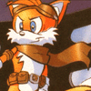
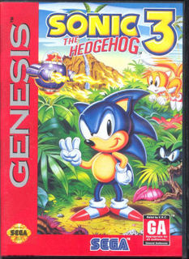

Mega Drive - Michael Jackson e Sonic 3
Por Milles
Michael Jackson realmente compôs as músicas de Sonic 3.

Em uma edicação da revista Black and White (publicação francesa dedicada ao Michael Jackson), o compositor Buxer confirmou que ele e o Michael estiveram envolvidos na trilha sonora do jogo Sonic the Hedgehog 3. Confiram um trecho da revista abaixo:
B&W:
Você pode esclarecer o rumor que Michael esteve envolvido com a
composição das músicas do video game Sonic 3, o qual você recebeu
crédito?
Buxer: Eu nunca
joguei o game, portanto eu não sei quais músicas que Michael e eu
trabalhamos e os desenvolvedores usaram, mas nós fizemos músicas para o
jogo. Michael me chamou naquele tempo pedindo ajuda para este projeto, e
foi isso que eu fiz. E se ele não recebeu crédito por compôr a música, é
porque ele não estava feliz com o resultado do som que saía do console.
Naquele tempo, os consoles não permitiam uma reprodução otimizada de
som, e Michael achou isso frustrante. Ele não queria ser associado a um
produto que desvalorizasse sua música...
B&W:
Uma das surpresas dessa trilha sonora é que você pode escutar os
acordes de Stranger in Moscow, a qual foi supostamente composta mais
tarde...
Buxer: Sim, Michael e eu fizemos esses acordes para o game, e foram usados como base para Stranger in Moscow.
Acesse o Trombone e comente sobre essa matéria!


O jogo Sonic The Hedgehog marcou o inicio de um dos personagens mais queridos dos jogos eletrônicos. Uma curiosidade que vejo pouco comentada, é que este jogo de criação de Yuji Naka e sua equipe chamada Sonic Team, tem uma espécie de passagem de tempo na aventura